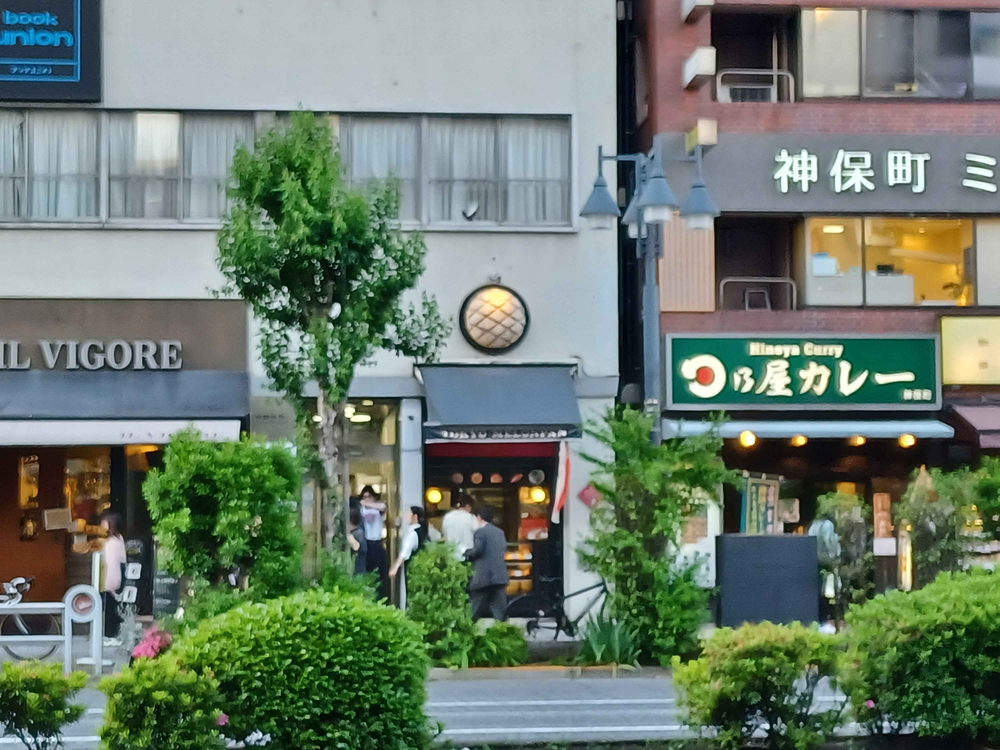

by Jae_Domain
May 2024
Let me start by telling you that I wish I'd had the foresight to make this website back during my Tokyo internship, so I'm going to do my best to catalogue some of my favorite lunch spots by memory. Like the vast majority of my (and most salarymen's) lunch hours, this recommendation lives in the heart of the office worker's district, Jinbocho.
During my time at NII, my lunch hour normally involved weighing my options between grabbing a 500 yen bento in the office basement, or caving in to the salary culture of a quick bite out (guess what normally won.) One of the best parts of working in the heart of Chiyoda was that I never had to bother with researching places to eat. Nine point five times out of ten, I'd stumble upon someplace interesting looking with a long line, or I'd get an enthusiastic recommendation thrust upon me by one of my co-workers. As you can imagine, Maruka was one of those first recommendations.
Maruka (まるか) was by far the most literal embodiment of Japanese dining culture I'd seen. Maruka is this delightfully inconspicuous udon restaurant that'd be hard to stumble upon if not for the line of people standing outside of it in anticipation for the lunch rush. So...y'know it's going to be good. I can wax poetic about the quality of the noodles, but the biggest thing I remember about my visits to Maruka were how on edge I felt the entire time. The pressure to conform is paramount which involves stuttering out a poorly pronounced order to the waitstaff as they rush you onto group seating benches, and quietyly wolfing down your meal as quickly as possible to make room for the next guest. This is not a place to linger, which is why I don't feel too bad for not providing pictures. I imagine it's probably difficult to recommend a place like Maruka to most tourists just because it's a bit out of the way of the most noteworthy parts of Tokyo (unless you have a thing for books and movie posters) so I figure this blog is the one place I can share my love for the place without feeling like too much of an elitist asshole.
I've long since accepted the fact that Japanese cuisine puts a much larger emphasis on mild flavors which I can only assume is what the soup tasted like. But I'm mostly here to talk about the noodles. An old flame of mine used to tell me that the biggest distinction between Americanized Japanese food and the real deal was in the texture of the noodles and this place really shows it. You get something light, springy, chewy. A basic, affordable meal that reminds you that sufficient food doesn't have to be fancy. I mean, 90% of most of the meals I had in Japan were around 80% noodles. It's deceptive, but I promise you it's worth the awkward social faux pas at least once.
And while you're in Jinbocho, make sure to stop by Tokyo Melon Pan for some dessert on the way back to the station. I promise you it'll be loads better than the touristy stuff they'll push on you at Asakusa.